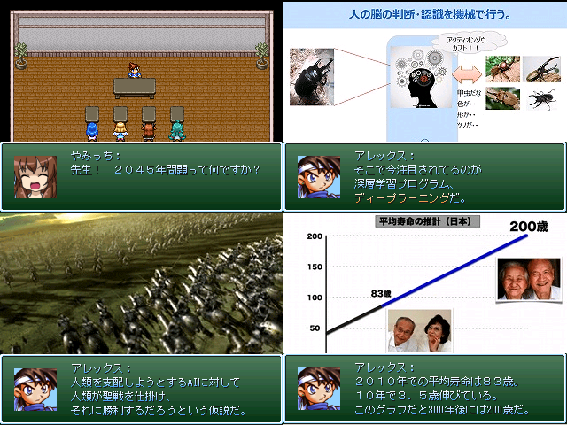

保存資料：2019-01-29の公開ページを再生しています。原HTMLと画像の載荷は保存済みです。
| No.55 2045年問題を学ぶ！ | |
 |
|
| 作者：ダダルマー | |
| ツクール：2000 | |
| ジャンル：講座ゲー | |
| 配信/投稿：可/不可 | |
| 作者コメント： 2045年問題を学ぶ！ 技術的特異点（シンギュラリティ）の恩恵と恐怖 各所で調べた情報をまとめたものです。 申し訳ないですが、 あまり突っ込んだ事を聞かれても答えられません。 このゲームで少しでも希望を持って頂けたら幸いです。 |
|
| 管理人コメント： 2038年問題を扱うゲームが紅白にあったけど、2045年にも何かあるのか……。 |
|
| ダウンロード(1.8MB) / 感想掲示板 | |
| 前の作品 / 次の作品 / TOPへ戻る | |